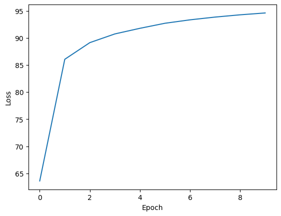
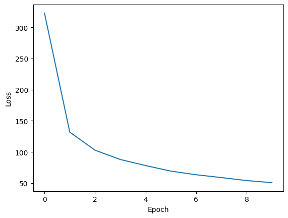

import torch
import torch.nn as nn
import torch.nn.functional as F
from torch.utils.data import Dataset, random_split, DataLoader
from torchvision import datasets, transforms, models
import torchvision.transforms as transforms
from torch.utils.data import Dataset, random_split, DataLoader
from torchvision.utils import save_image
from torchsummary import summary
import spacy
import numpy as np
import pandas as pd
import matplotlib.pyplot as plt
import os
import time
import math
from PIL import Image
import glob
from IPython.display import displayHandwritten Image Classification with Vision in Transformers (ViT)
device = torch.device("cuda" if torch.cuda.is_available() else "cpu")
print(device)cudatorch.manual_seed(0)
np.random.seed(0)BATCH_SIZE = 200
LR = 5e-5
NUM_EPOCHES = 10mean, std = (0.5,), (0.5,)
transform = transforms.Compose([transforms.ToTensor(),
transforms.Normalize(mean, std)
])trainset = datasets.MNIST('../data/MNIST/', download=True, train=True, transform=transform)
trainloader = torch.utils.data.DataLoader(trainset, batch_size=BATCH_SIZE, shuffle=True)
testset = datasets.MNIST('../data/MNIST/', download=True, train=False, transform=transform)
testloader = torch.utils.data.DataLoader(testset, batch_size=BATCH_SIZE, shuffle=False)Downloading http://yann.lecun.com/exdb/mnist/train-images-idx3-ubyte.gz
Downloading http://yann.lecun.com/exdb/mnist/train-images-idx3-ubyte.gz to ../data/MNIST/MNIST/raw/train-images-idx3-ubyte.gz
Extracting ../data/MNIST/MNIST/raw/train-images-idx3-ubyte.gz to ../data/MNIST/MNIST/raw
Downloading http://yann.lecun.com/exdb/mnist/train-labels-idx1-ubyte.gz
Downloading http://yann.lecun.com/exdb/mnist/train-labels-idx1-ubyte.gz to ../data/MNIST/MNIST/raw/train-labels-idx1-ubyte.gz
Extracting ../data/MNIST/MNIST/raw/train-labels-idx1-ubyte.gz to ../data/MNIST/MNIST/raw
Downloading http://yann.lecun.com/exdb/mnist/t10k-images-idx3-ubyte.gz
Downloading http://yann.lecun.com/exdb/mnist/t10k-images-idx3-ubyte.gz to ../data/MNIST/MNIST/raw/t10k-images-idx3-ubyte.gz
Extracting ../data/MNIST/MNIST/raw/t10k-images-idx3-ubyte.gz to ../data/MNIST/MNIST/raw
Downloading http://yann.lecun.com/exdb/mnist/t10k-labels-idx1-ubyte.gz
Downloading http://yann.lecun.com/exdb/mnist/t10k-labels-idx1-ubyte.gz to ../data/MNIST/MNIST/raw/t10k-labels-idx1-ubyte.gz
Extracting ../data/MNIST/MNIST/raw/t10k-labels-idx1-ubyte.gz to ../data/MNIST/MNIST/raw
100%|██████████| 9912422/9912422 [00:00<00:00, 132524476.35it/s]
100%|██████████| 28881/28881 [00:00<00:00, 40378564.61it/s]
100%|██████████| 1648877/1648877 [00:00<00:00, 38440411.96it/s]
100%|██████████| 4542/4542 [00:00<00:00, 22842360.63it/s]Model
!pip install transformer-implementations
from transformer_package.models import ViTCollecting transformer-implementations
Downloading transformer_implementations-0.0.9-py3-none-any.whl (9.4 kB)
Installing collected packages: transformer-implementations
Successfully installed transformer-implementations-0.0.9image_size = 28
channel_size = 1
patch_size = 7
embed_size = 512
num_heads = 4
classes = 10
num_layers = 2
hidden_size = 256
dropout = 0.2
model = ViT(image_size, channel_size, patch_size, embed_size, num_heads, classes, num_layers, hidden_size, dropout=dropout).to(device)
modelViT(
(dropout_layer): Dropout(p=0.2, inplace=False)
(embeddings): Linear(in_features=49, out_features=512, bias=True)
(encoders): ModuleList(
(0-1): 2 x VisionEncoder(
(norm1): LayerNorm((512,), eps=1e-05, elementwise_affine=True)
(norm2): LayerNorm((512,), eps=1e-05, elementwise_affine=True)
(attention): MultiHeadAttention(
(dropout_layer): Dropout(p=0.2, inplace=False)
(Q): Linear(in_features=512, out_features=512, bias=True)
(K): Linear(in_features=512, out_features=512, bias=True)
(V): Linear(in_features=512, out_features=512, bias=True)
(linear): Linear(in_features=512, out_features=512, bias=True)
)
(mlp): Sequential(
(0): Linear(in_features=512, out_features=2048, bias=True)
(1): GELU(approximate='none')
(2): Dropout(p=0.2, inplace=False)
(3): Linear(in_features=2048, out_features=512, bias=True)
(4): Dropout(p=0.2, inplace=False)
)
)
)
(norm): LayerNorm((512,), eps=1e-05, elementwise_affine=True)
(classifier): Sequential(
(0): Linear(in_features=512, out_features=10, bias=True)
)
)for img, label in trainloader:
img = img.to(device)
label = label.to(device)
print("Input Image Dimensions: {}".format(img.size()))
print("Label Dimensions: {}".format(label.size()))
print("-"*100)
out = model(img)
print("Output Dimensions: {}".format(out.size()))
breakInput Image Dimensions: torch.Size([200, 1, 28, 28])
Label Dimensions: torch.Size([200])
----------------------------------------------------------------------------------------------------
Output Dimensions: torch.Size([200, 10])criterion = nn.NLLLoss()
optimizer = torch.optim.Adam(params=model.parameters(), lr=LR)loss_hist = {}
loss_hist["train accuracy"] = []
loss_hist["train loss"] = []
for epoch in range(1, NUM_EPOCHES+1):
model.train()
epoch_train_loss = 0
y_true_train = []
y_pred_train = []
ip = 0
for batch_idx, (img, labels) in enumerate(trainloader):
img = img.to(device)
labels = labels.to(device)
preds = model(img)
loss = criterion(preds, labels)
optimizer.zero_grad()
loss.backward()
optimizer.step()
y_pred_train.extend(preds.detach().argmax(dim=-1).tolist())
y_true_train.extend(labels.detach().tolist())
epoch_train_loss += loss.item()
ip = ip + 1
if ip % 100 == 0:
print("Step: {:.8f} {:.8f}".format(epoch, ip))
loss_hist["train loss"].append(epoch_train_loss)
total_correct = len([True for x, y in zip(y_pred_train, y_true_train) if x==y])
total = len(y_pred_train)
accuracy = total_correct * 100 / total
loss_hist["train accuracy"].append(accuracy)
print("-------------------------------------------------")
print("Epoch: {} Train mean loss: {:.8f}".format(epoch, epoch_train_loss))
print(" Train Accuracy%: ", accuracy, "==", total_correct, "/", total)
print("-------------------------------------------------")Step: 1.00000000 100.00000000
Step: 1.00000000 200.00000000
Step: 1.00000000 300.00000000
-------------------------------------------------
Epoch: 1 Train mean loss: 323.08200696
Train Accuracy%: 63.598333333333336 == 38159 / 60000
-------------------------------------------------
Step: 2.00000000 100.00000000
Step: 2.00000000 200.00000000
Step: 2.00000000 300.00000000
-------------------------------------------------
Epoch: 2 Train mean loss: 131.86424088
Train Accuracy%: 86.045 == 51627 / 60000
-------------------------------------------------
Step: 3.00000000 100.00000000
Step: 3.00000000 200.00000000
Step: 3.00000000 300.00000000
-------------------------------------------------
Epoch: 3 Train mean loss: 102.83779885
Train Accuracy%: 89.11833333333334 == 53471 / 60000
-------------------------------------------------
Step: 4.00000000 100.00000000
Step: 4.00000000 200.00000000
Step: 4.00000000 300.00000000
-------------------------------------------------
Epoch: 4 Train mean loss: 87.88007259
Train Accuracy%: 90.72666666666667 == 54436 / 60000
-------------------------------------------------
Step: 5.00000000 100.00000000
Step: 5.00000000 200.00000000
Step: 5.00000000 300.00000000
-------------------------------------------------
Epoch: 5 Train mean loss: 78.15140389
Train Accuracy%: 91.76166666666667 == 55057 / 60000
-------------------------------------------------
Step: 6.00000000 100.00000000
Step: 6.00000000 200.00000000
Step: 6.00000000 300.00000000
-------------------------------------------------
Epoch: 6 Train mean loss: 69.25521898
Train Accuracy%: 92.69333333333333 == 55616 / 60000
-------------------------------------------------
Step: 7.00000000 100.00000000
Step: 7.00000000 200.00000000
Step: 7.00000000 300.00000000
-------------------------------------------------
Epoch: 7 Train mean loss: 63.42148008
Train Accuracy%: 93.325 == 55995 / 60000
-------------------------------------------------
Step: 8.00000000 100.00000000
Step: 8.00000000 200.00000000
Step: 8.00000000 300.00000000
-------------------------------------------------
Epoch: 8 Train mean loss: 58.87239636
Train Accuracy%: 93.83333333333333 == 56300 / 60000
-------------------------------------------------
Step: 9.00000000 100.00000000
Step: 9.00000000 200.00000000
Step: 9.00000000 300.00000000
-------------------------------------------------
Epoch: 9 Train mean loss: 54.04052846
Train Accuracy%: 94.25166666666667 == 56551 / 60000
-------------------------------------------------
Step: 10.00000000 100.00000000
Step: 10.00000000 200.00000000
Step: 10.00000000 300.00000000
-------------------------------------------------
Epoch: 10 Train mean loss: 50.72075617
Train Accuracy%: 94.59333333333333 == 56756 / 60000
-------------------------------------------------Test
plt.plot(loss_hist["train accuracy"])
plt.xlabel("Epoch")
plt.ylabel("Loss")
plt.show()
plt.plot(loss_hist["train loss"])
plt.xlabel("Epoch")
plt.ylabel("Loss")
plt.show()
with torch.no_grad():
model.eval()
y_true_test = []
y_pred_test = []
for batch_idx, (img, labels) in enumerate(testloader):
img = img.to(device)
label = label.to(device)
preds = model(img)
y_pred_test.extend(preds.detach().argmax(dim=-1).tolist())
y_true_test.extend(labels.detach().tolist())
total_correct = len([True for x, y in zip(y_pred_test, y_true_test) if x==y])
total = len(y_pred_test)
accuracy = total_correct * 100 / total
print("Test Accuracy%: ", accuracy, "==", total_correct, "/", total)Test Accuracy%: 96.43 == 9643 / 10000